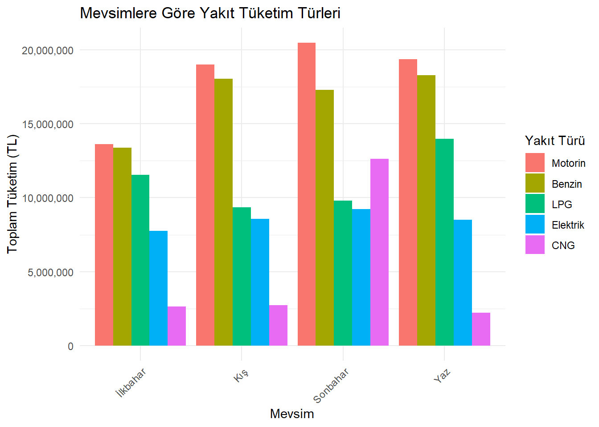
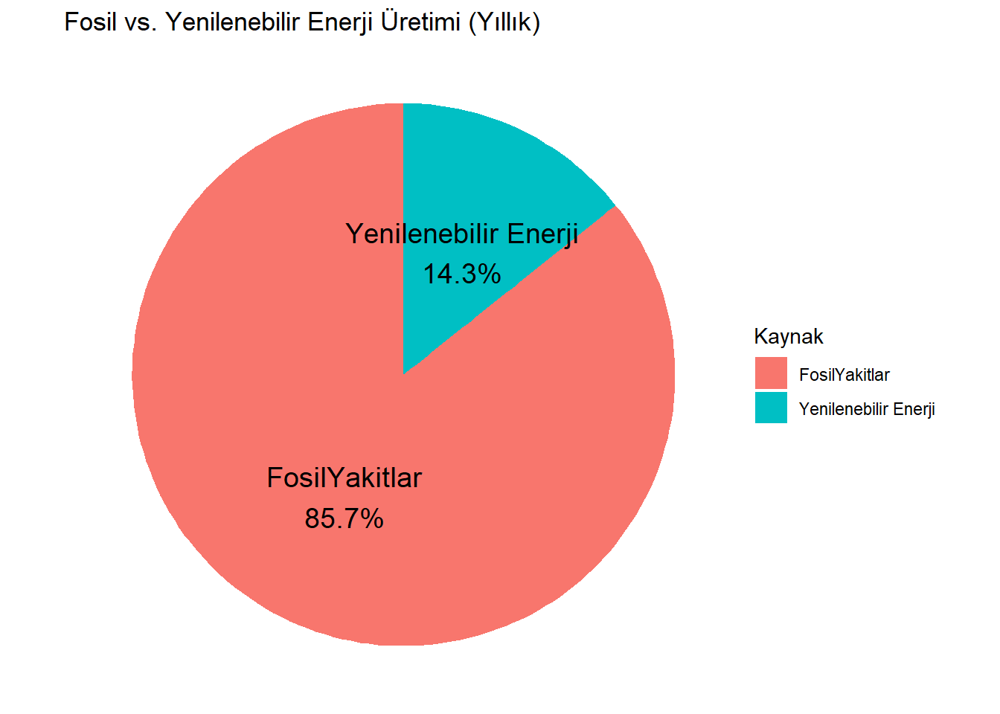
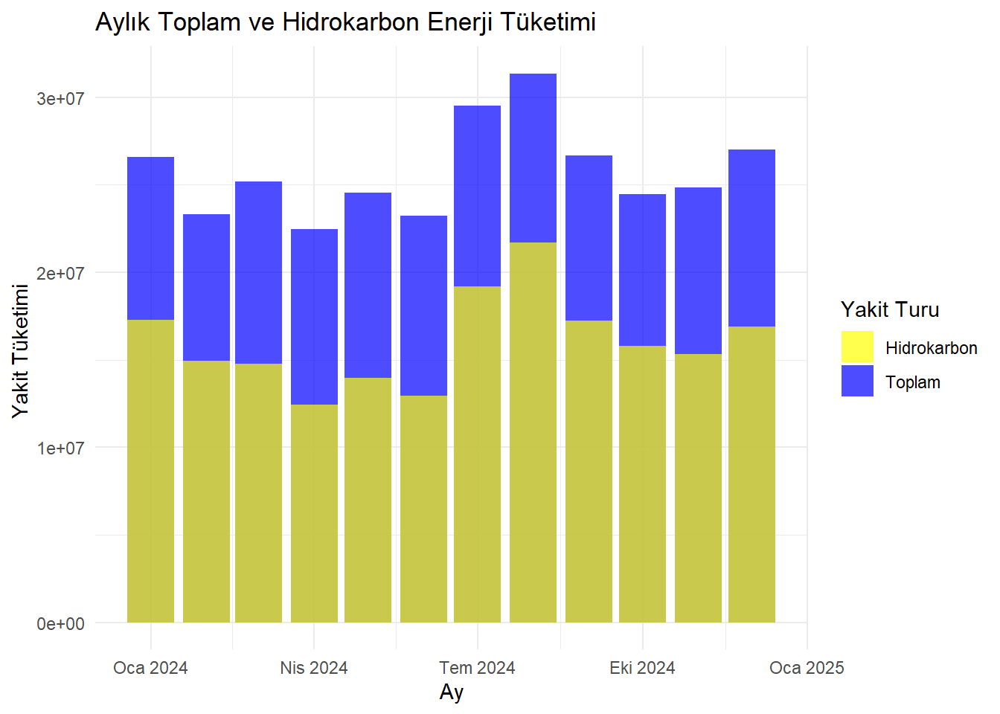

Nullpointer-bros Grubu Proje Sayfasına Hoşgeldiniz
Projemizle ilgili güncellemelerden haberdar olmak için bu alanı takip edin.
[[Projemizin ön gösterimi için lütfen tıklayınız]]
1 Proje Genel Bakış ve Kapsamı
Bu proje kapsamında, tüketilen yakıt verilerini detaylı bir şekilde analiz etmeyi hedefliyoruz.
Amacımız, veri analizi ve görselleştirme tekniklerini kullanarak, mevsimsel değişimleri, trendleri ve ilişkileri ortaya çıkarmak ve değerlendirmektir.
1. Veri Toplama ve Hazırlık: İlk olarak, tüketim verilerini titizlikle topladık ve ilgili verilerin işlenebilecek hale gelmesi için çalıştık. Bu aşamada, veri setini temizleme, eksik değerleri doldurma ve format değişikliklerini yaparak veri setini analiz için hazır hale getirmiş olduk.
2. Mevsimsel Değişim Analizi: Ayları mevsimlere göre gruplayarak, mevsimsel değişimlerin yakıt tüketimi üzerindeki etkilerini değerlendireceğiz. Bu analiz, mevsimler arasındaki yakıt tüketim farklarını ve hangi mevsimlerde yenilenebilir/karbon bazlı enerji kaynaklarının daha çok kullanıldığını belirleyecektir.
3. Grafiksel Temsiller ve Trend Analizi: Veri setindeki dataları daha iyi görselleştirmek için çeşitli grafikler kullanacağız. Bar grafikleri, çizgi grafikleri ve diğer görsel araçlar kullanarak veri setindeki trendleri görselleştirecek ve bu trendleri analiz edeceğiz.
4. Sonuçların İncelenmesi ve Yorumlanması: Projemizin sonuçlarını dikkatlice inceleyip yorumlayacağız.
Bu proje kapsamında, enerji sektöründeki veri odaklı bir yaklaşım kullanarak enerji tüketim verilerini analiz etme ve yorumlama konusunda bir çerçeve sunmayı amaçlamaktadır.
2 Veri
2024 Yılı Mega Endüstri Kontrol Sistemleri Tüketim Kaynak Bazlı Verisi
2.1 Veri Hakkında Genel Bilgiler
Bu veri seti, Mega Endüstri Kontrol Sistemleri şirketine ait 2024 yılına ilişkin enerji satış ve talep verilerini içermektedir.
2.2 Tercih Sebebi
Bu proje kapsamında, bir grup olarak bir enerji firmasındaki satış taleplerini ele almayı amaçladık.
Bu amaç doğrultusunda, enerji tüketimi üzerine odaklanıp verilerini analiz etmek için bir veri seti seçme kararı aldık. İşte grup olarak bu veri setini seçme nedenlerimiz:
İşbirliği ve Ortak Hedefler: Grup üyeleri olarak birlikte çalışarak enerji sektöründeki belirli bir problemi çözmeyi hedefledik. Enerji tüketim verilerini analiz etmek, ortak hedeflerimize ulaşmamızı sağlayacak güçlü bir başlangıç noktasıydı.
Analitik Yeteneklerimizin Birleştirilmesi: Grup üyeleri arasında çeşitli analitik becerilere sahip bireyler bulunmaktadır. Bu veri setini seçerek, farklı perspektiflerden faydalanarak birlikte güçlü bir analiz yapma potansiyelimizi görmüş olduk.
Birlikte Öğrenme ve Gelişme İhtiyacı: Grup olarak, belirli bir konuda daha fazla bilgi edinmek ve analitik becerilerimizi geliştirmek istiyoruz. Bu veri setini seçerek, birlikte çalışarak yeni bilgiler öğrenme ve becerilerimizi geliştirme fırsatı bulacağımızı düşündük.
Proje Gereksinimleri ve Amaçları: Projemizin gereksinimleri doğrultusunda, enerji tüketim verilerini analiz etmek önemliydi. Bu veri seti, projemizin amaçlarına uygun bir şekilde, analiz yapmak için uygun bir temel sağlıyor.
2.3 Verilerin Ön İşlemelerin Yapılması
Veri analizi sürecinde, verinin doğru sonuçlar üretmesi için ön işleme adımları oldukça önemlidir. Bu adımlar, veri setinin temizlenmesi, eksik değerlerin doldurulması ve gerekiyorsa verinin dönüştürülmesi gibi işlemleri içerir. İşte veri ön işleme adı altında gerçekleştirdiğimiz detaylı işlemler:
Veri Temizleme:
Veri setindeki gereksiz veya tutarsız verileri belirleyerek kaldırdık.
Anlamsız veya yanlış verileri düzeltmek için veri setini inceledik ve düzenledik.
Veri setindeki gereksiz sütunları (değişkenleri) kaldırdık veya gereksiz gözlemleri (satırları) sildik.
Eksik Veri Analizi ve Doldurma:
Eksik verileri belirleyerek, eksik veri analizi yaptık ve eksik veri sayısını ve dağılımını değerlendirdik.
Eksik verileri uygun bir yöntemle doldurarak veri kaybını minimize ettik. Örneğin, eksik sayısal verileri ortalama veya medyan değerleri ile doldurduk, eksik kategorik verileri mod değerleriyle doldurduk veya eksik verileri tahmin etmek için makine öğrenimi modelleri kullandık.
Gerektiğinde, sayısal değişkenlerin dağılımlarını dönüştürerek normal dağılıma daha yakın hale getirdik. Bu, model performansını iyileştirebilir.
Aykırı Değerleri İncelenmesi ve İşlenmesi:
Aykırı değerleri belirleyerek, bu değerlerin neden kaynaklandığını ve nasıl işlenebileceğini inceledik.
Aykırı değerleri düzeltmek veya kaldırmak için uygun yöntemleri kullandık. Örneğin, aykırı değerleri ortalama veya medyan değerleri ile değiştirdik veya sınırladık.
Bu ön işleme adımları, veri setimizi analiz etmeden önce temizlememizi ve hazırlamamızı sağlar. Doğru ön işleme adımları kullanılarak, veri setimizin kalitesini artırabilir ve sonuçlarımızın güvenilirliğini sağlayabiliriz
3 Analiz
3.1 Yakıt Tüketiminde Yenilenebilir Enerji ve Fosil Tabanlı Kaynakların Payı
Grafiklerimiz, toplam yakıt tüketimi içindeki fosil bazlı ve yenilenebilir enerji kaynaklarının payını göstermektedir. Fosil bazlı kaynakların hala önemli bir paya sahip olduğunu gözlemlemekteyiz; ancak yenilenebilir enerji kaynaklarının da giderek artan bir oranda yakıt tüketiminde rol oynadığını belirtmek gerekir. Bu durum, sürdürülebilir enerji kullanımına doğru yapılan geçişin bir göstergesi olarak değerlendirilebilir.
R kodu:
# Gerekli kütüphaneyi yüklemeniz gerekmektedirlibrary(readr)# Veri setimizi okuyoruzlibrary(readr)colnames(data)
NULL
library(readr)data <-read_csv2("data/yakitTuketimcs.csv", locale =locale(encoding ="ISO-8859-9"))production_types <-colSums(data[, 4:ncol(data)])# Karbon bazlı ve yenilenebilir enerji kaynaklarını tanımlıyoruzcarbon_sources <-c("Benzin", "FuelOil", "Motorin", "İthalDizel","LPG","EndustriyelYakıt","Hibrit")renewable_sources <-c( "Elektrik")# Karbon bazlı ve yenilenebilir kaynakların toplamıcarbon_total <-sum(production_types[carbon_sources])renewable_total <-sum(production_types[renewable_sources])# Pasta grafiği için yeni bir vektör oluşturuyoruzenergy_categories <-c(FosilYakit = carbon_total, Yenilenebilir = renewable_total)# Yüzdeleri hesaplıyoruzpercentages <-round(100* energy_categories /sum(energy_categories), 1)# Yüzdelerle etiketleri oluşturuyoruzlabels <-paste(names(energy_categories), ": ", percentages, "%", sep="")# Pasta grafiği çizdiriyoruzpie(energy_categories, labels = labels, main ="Yakıt Tuketimi", col =c("darkgray", "green"))
3.2 Haftaiçi ve Haftasonu Gerçekleşen Tüketim Grafiğinin Aylara Göre Dağılımı
Grafiğimiz, aylık bazda hafta içi ve hafta sonu günlerine ayrılmış tüketim miktarlarını karşılaştırarak sunmaktadır. Turuncu çubuklar, hafta içi günlerde üretilen yakıt miktarını, mavi çubuklar ise hafta sonlarında tüketim miktarı temsil etmektedir. Yıl boyunca, Ocak’tan Aralık’a kadar olan veriler incelendiğinde, hafta içi günlerinde tüketilen yakıt miktarının hafta sonlarına göre daha yüksek olduğunu gözlemliyoruz.
Özellikle Mart ve Ekim aylarında, hafta içi yakıt tüketiminin pik yaptığını belirlemek mümkün. Bu durum, endüstriyel aktivitelerin ve genel enerji talebinin yoğun olduğu dönemlerde daha belirgin hale gelmektedir. Diğer yandan, Mayıs ve Haziran aylarında hafta içi ve hafta sonu arasındaki tüketim farkı azalmaktadır. Yaz tatillerinin başlaması ve hava sıcaklıklarının yükselmesi gibi sebeplerle iş yerleri ve okulların aktivitelerinde gözlemlenen düşüş bu duruma katkıda bulunuyor olabilir.
R kodu:
# Gerekli kütüphanelerlibrary(readr)library(dplyr)library(lubridate)library(ggplot2)library(scales)# Veriyi okuyoruzdata <-read_csv2("data/yakitTuketimcs.csv", locale =locale(encoding ="ISO-8859-9"))# Sütun adını düzeltiyoruznames(data)[1] <-"Tarih"# Tarih sütununu Date formatına çeviriyoruzdata$Tarih <-as.Date(data$Tarih, format ="%d.%m.%Y")# 'Toplam' sütunundaki virgülü noktaya çevirip sayıya dönüştürüyoruzdata$Toplam <-as.numeric(gsub(",", ".", data$Toplam))# NA değerlerini temizliyoruzdata <-na.omit(data)# Hafta içi / hafta sonu bilgisi ekliyoruzdata$GunTipi <-ifelse(wday(data$Tarih, week_start =1) %in%c(6, 7),"HaftaSonu", "Haftaici")# Ay bilgisini ekliyoruzdata$Ay <-month(data$Tarih, label =TRUE)# Aylık ve gün tipine göre gruplayıp toplam tüketimin hesabımonthly_data <- data %>%group_by(Ay, GunTipi) %>%summarise(Toplam =sum(Toplam, na.rm =TRUE))# Grafiği çiziyoruzggplot(monthly_data, aes(x = Ay, y = Toplam, fill = GunTipi)) +geom_bar(stat ="identity", position ="dodge") +labs(title ="Aylık Toplam Yakıt Tuketimi: Hafta içi - Hafta Sonu",x ="Ay",y ="Toplam Tuketim (TL)" ) +scale_y_continuous(labels = comma) +scale_fill_manual(values =c("darkblue", "orange")) +theme_minimal() +theme(axis.text.x =element_text(angle =45, hjust =1))
3.3 Tüketim Türüne Göre Mevsimsel Dağılım Grafiği
Grafiğimiz, her ay toplam tüketim miktarlarını karşılaştırıyor. Yenilenebilir enerji kaynakları, çevresel etkileri düşük ve sürdürülebilir bir enerji sağladığı için önemlidir.
Ek olarak bu grafik herbir yakıt türünün mevsimsel satış miktarlarını anlatmaktadır.
R kodu:
# Gerekli kütüphaneleri yükleyinlibrary(ggplot2)library(dplyr)library(tidyr)library(readr)library(scales) # label_comma için# Veriyi doğru kodlama ile okuyundata <-read_csv2("data/yakitTuketimcs.csv", locale =locale(encoding ="ISO-8859-9"))# Sütun adlarını düzeltiyoruznames(data)[names(data) =="ï..Tarih"] <-"Tarih"# Tarih sütununu gün.ay.yıl formatına çeviriyoruzdata$Tarih <-as.Date(data$Tarih, format ="%d.%m.%Y")# Ay ve mevsim bilgilerini ekleyindata$Ay <-as.numeric(format(data$Tarih, "%m"))data$Mevsim <-ifelse(data$Ay %in%c(12, 1, 2), "Kış",ifelse(data$Ay %in%c(3, 4, 5), "İlkbahar",ifelse(data$Ay %in%c(6, 7, 8), "Yaz", "Sonbahar")))# Mevsim sütununu da dahil ederek veriyi long formata çeviriyoruzlong_data <- data %>%select(Mevsim, Motorin, Benzin, LPG, Elektrik, CNG) %>%pivot_longer(cols =-Mevsim, names_to ="UretimTuru", values_to ="Miktar")seasonal_data <- long_data %>%group_by(Mevsim, UretimTuru) %>%summarise(ToplamMiktar =sum(Miktar, na.rm =TRUE), .groups ="drop")# Grafik çizdiriyoruzggplot(seasonal_data, aes(x = Mevsim, y = ToplamMiktar, fill = UretimTuru)) +geom_bar(stat ="identity", position =position_dodge()) +scale_y_continuous(labels =label_comma()) +labs(title ="Mevsimlere Gore Yakit Tuketim Türleri",x ="Mevsim",y ="Toplam Tuketim (TL)",fill ="Yakit Turu") +theme_minimal() +theme(axis.text.x =element_text(angle =45, hjust =1))
# UretimTuru'na göre toplam miktarları hesapla ve sıralaordered_levels <- seasonal_data %>%group_by(UretimTuru) %>%summarise(Total =sum(ToplamMiktar)) %>%arrange(desc(Total)) %>%pull(UretimTuru)# Faktör sıralamasını belirleseasonal_data$UretimTuru <-factor(seasonal_data$UretimTuru, levels = ordered_levels)# Grafik çizimiggplot(seasonal_data, aes(x = Mevsim, y = ToplamMiktar, fill = UretimTuru)) +geom_bar(stat ="identity", position =position_dodge()) +scale_y_continuous(labels =label_comma()) +labs(title ="Mevsimlere Göre Yakıt Tüketim Türleri",x ="Mevsim",y ="Toplam Tüketim (TL)",fill ="Yakıt Türü") +theme_minimal() +theme(axis.text.x =element_text(angle =45, hjust =1))

3.3.1Genel Gözlemler
Motorin, tüm mevsimlerde en yüksek tüketim değerine sahip yakıt türüdür.
Elektrik, özellikle Sonbahar’da tüketimde ciddi bir artış göstermektedir.
CNG (Sıkıştırılmış Doğal Gaz) her mevsimde en az tüketilen yakıt türü olma eğilimindedir.
LPG tüketimi mevsimsel olarak çok büyük farklılıklar göstermemekte, genelde dengeli.
3.3.2İlkbahar
En çok tüketilen yakıt: Motorin
Benzin ve LPG birbirine yakın tüketim seviyelerinde.
Elektrik ve CNG nispeten daha az tüketiliyor.
Motorin, Benzin ve LPG öne çıkıyor.
3.3.3Kış
Motorin tüketimi artmış, ikinci sırada Benzin var.
Elektrik tüketimi yükselmiş (muhtemelen elektrikli ısıtma etkisi olabilir).
CNG yine düşük seviyede.
Soğuk havalar nedeniyle içten yanmalı motorlara olan bağımlılık yüksek olabilir.
3.3.4Sonbahar
Elektrik tüketimi belirgin şekilde artmış.
Motorin yine zirvede.Benzin ve LPG yüksek ama motorine göre düşük.
Elektrikli araç kullanımında artış olabilir veya iklimsel koşullar buna sebep olmuş olabilir.
3.3.5Yaz
Motorin tüketimi yine çok yüksek.
Benzin tüketimi artmış.
Elektrik ve LPG benzer düzeylerde.
CNG en az kullanılan.
3.3.6Sonuç ve Değerlendirme
Motorin, özellikle ticari taşımacılık ve ağır araçlarda kullanıldığından tüm mevsimlerde yüksek tüketiliyor.
Elektrik, Sonbahar’da dikkat çekici şekilde artıyor. Bu durum elektrikli araç kullanımının mevsimsel değişikliklerinden kaynaklanabilir.
Benzin ve LPG, genelde orta düzeyde sabit bir tüketim gösteriyor.
CNG en az tercih edilen yakıt türü olarak öne çıkıyor.
3.3.7 Yıllık Yakıt Satış Miktarı
library(tidyverse)# Enerji kaynaklarına göre toplamları hesaplaenergy_totals <-colSums(data[, c("Motorin", "Benzin", "LPG", "Elektrik","CNG")])# Toplam üretimtotal_production <-sum(energy_totals)# Yüzdelik hesaplamaları yapenergy_percentages <- energy_totals / total_production *100# Enerji kaynaklarını ve yüzdelerini bir dataframe'e çevirenergy_df <-data.frame(Enerji_Kaynagi =names(energy_percentages), Yuzde = energy_percentages)# Pie chart çizpie(energy_df$Yuzde, labels =paste(energy_df$Enerji_Kaynagi, sprintf("(%.1f%%)", energy_df$Yuzde)), main ="Yıllık Yakıt Satis Dagilimi",col =rainbow(length(energy_df$Yuzde)))# Efsane eklemelegend("topright", legend = energy_df$Enerji_Kaynagi, fill =rainbow(length(energy_df$Yuzde)))
Grafikte, “Yıllık Yakıt Satış Dağılımı” başlığı altında farklı yakıt türlerinin toplam satışlar içindeki yüzdesel payları gösterilmektedir. Pasta grafiği verileri şu şekildedir:
Motorin: %30.4 (Kırmızı dilim) – En yüksek satış oranına sahip yakıt türüdür.
Benzin: %28.1 (Sarı dilim) – İkinci sırada yer almakta, motorine oldukça yakın bir orana sahiptir.
LPG: %18.7 (Yeşil-turkuaz dilim) – Üçüncü sıradadır, oldukça yaygın kullanıldığını göstermektedir.
Elektrik: %14.3 (Mavi dilim) – Elektrikli araçların giderek arttığını gösteren önemli bir paya sahip.
CNG (Sıkıştırılmış Doğalgaz): %8.5 (Mor dilim) – En az paya sahip yakıt türüdür.
Genel Değerlendirme: Geleneksel yakıtlar (Motorin, Benzin, LPG) toplamda yaklaşık %77’lik bir oranla pazara hâkimdir.
Alternatif yakıtlar (Elektrik ve CNG) ise %22.8’lik bir paya sahiptir.
Elektrikli araçların payı azımsanamayacak düzeyde ve bu, enerji dönüşümünün başladığını gösteriyor.
CNG’nin düşük payı, altyapı ya da kullanıcı tercihi açısından sınırlı kullanımda olduğunu düşündürebilir.
4 Yakıt Tüketiminin Detaylı Satış Dağılımı
Ocak Ayı: Yılın başında motorin ve benzin kullanımı yüksek seviyelerde görülüyor. Bu, soğuk havalarda özellikle ısıtma sistemleri, ulaşım ve endüstriyel taleplerin motorin ve benzin tüketimini artırdığını gösteriyor. Yenilenebilir kaynaklar ise mevsim koşullarından dolayı düşük düzeyde kalmış olabilir.
Nisan Ayı: İlkbahar aylarında motorin ve benzin kullanımı azalmaya başlamış. Baharın gelişiyle birlikte ısıtma ihtiyacı azalırken, yenilenebilir enerji üretimi (örneğin Elektrik) artış eğiliminde. Aynı şekilde biyoyakıt kullanımı sabit bir çizgide devam etmiş.
Temmuz Ayı: Yaz aylarında enerji ihtiyacı özellikle klima kullanımıyla birlikte artmış olabilir. Bu nedenle motorin ve benzin kullanımı tekrar artış göstermiştir. Güneşli hava koşulları, yenilenebilir enerji üretiminde de belirgin bir yükselişe neden olmuştur. Biyoyakıt, diğer kaynaklara göre daha düşük ama sabit bir katkı sunmaktadır.
Ekim Ayı: Sonbaharın gelişiyle birlikte motorin ve benzin tüketimi yeniden artışa geçmiş, bu da ısıtma ve ulaşım ihtiyaçlarının devreye girmesinden kaynaklanıyor olabilir. Yenilenebilir kaynakların üretimi, yaz aylarına göre azalmaya başlamış. Biyoyakıt kullanımı ise stabil şekilde sürmektedir.
R kodu:
library(tidyverse)library(lubridate)# Aylık toplamları hesapla ve hidrokarbon kaynaklarına göre ayırmonthly_hydrocarbons <- data %>%mutate(Tarih = Tarih +years(1), # Tarihe 1 yıl ekleniyorAy =floor_date(Tarih, "month") ) %>%group_by(Ay) %>%summarise(Motorin =sum(Motorin),Elektrik =sum(Elektrik),Benzin =sum(Benzin),LPG =sum(LPG),.groups ='drop' )# Erişilebilir format için veriyi long formata çevirmonthly_long <-pivot_longer(monthly_hydrocarbons, cols =c(Motorin, Elektrik, Benzin, LPG),names_to ="Enerji_Kaynagi", values_to ="Uretim")# Grafik çizggplot(monthly_long, aes(x = Ay, y = Uretim, fill = Enerji_Kaynagi)) +geom_bar(stat ="identity", position =position_dodge()) +scale_fill_brewer(palette ="Set1") +labs(title ="Aylık Hidrokarbon Enerji Satış(Talep) Dağılımı",x ="Ay",y ="Toplam Tuketim ",fill ="Enerji Kaynağı") +theme_minimal()
5 Fosil ve Yenilenebilir Enerjinin Talep Dağılımı
Bu grafik, 2024 yılı boyunca fosil yakıtlar ve yenilenebilir enerji kaynaklarının toplam enerji üretimi (veya talep) içindeki oranlarını göstermektedir. Pasta grafiğinde her dilim, belirli bir enerji kategorisinin toplam tüketim içerisindeki yüzdesini temsil etmektedir.
Ana Bulgular: Fosil Yakıtlar: Motorin, benzin gibi fosil kaynaklar toplam talebin büyük bir bölümünü oluşturmaktadır. Bu durum, halen geleneksel enerji kaynaklarına yüksek düzeyde bağımlı olunduğunu göstermektedir.
Yenilenebilir Enerji: Biyoyakıt ve yenilenebilir üretim kalemlerinin oluşturduğu bu kategori, sürdürülebilir enerjiye geçiş çabalarının bir göstergesidir. Oranı, enerji dönüşüm sürecinin ne kadar ilerlediğini değerlendirmek açısından önemlidir.
Genel Değerlendirme: Veriler, enerji üretim ve tüketim dengesinde fosil yakıtların hâlâ baskın olduğunu ortaya koymaktadır. Ancak yenilenebilir kaynakların grafik üzerindeki payı, enerji politikalarının ve teknolojik yatırımların bu yönde ilerlediğini göstermektedir.
Enerji arz güvenliği, çevresel etkiler ve ekonomik sürdürülebilirlik açısından yenilenebilir kaynakların payının artırılması gerekliliği açıktır. Bu dağılım, enerji dönüşüm sürecinin mevcut durumunu gözler önüne sererek karar vericiler ve politika yapıcılar için önemli bir referans sağlamaktadır.
library(tidyverse)# Sütun adlarını düzelt (garantili olması için)names(data) <-make.names(names(data))# Fosil ve yenilenebilir toplamlarını hesaplafosil_toplam <-rowSums(data[, c("Motorin", "Benzin","LPG","CNG")], na.rm =TRUE)yenilenebilir_toplam <-rowSums(data[, c("Elektrik")], na.rm =TRUE)# Yıllık toplam üretimi hesaplatoplam_fosil <-sum(fosil_toplam)toplam_yenilenebilir <-sum(yenilenebilir_toplam)# Veri çerçevesi oluşturkarsilastirma_df <-data.frame(Kaynak =c("FosilYakitlar", "Yenilenebilir Enerji"),Uretim =c(toplam_fosil, toplam_yenilenebilir))ggplot(karsilastirma_df, aes("", Uretim, fill = Kaynak)) +geom_bar(stat ="identity", width =1) +coord_polar("y") +theme_void()
# Yüzde hesaplakarsilastirma_df <- karsilastirma_df %>%mutate(Yuzde =round(Uretim /sum(Uretim) *100, 1),Etiket =paste0(Kaynak, "\n", Yuzde, "%"))# Pasta grafiği çizggplot(karsilastirma_df, aes(x ="", y = Uretim, fill = Kaynak)) +geom_bar(stat ="identity", width =1) +coord_polar("y") +geom_text(aes(label = Etiket), position =position_stack(vjust =0.5), size =5) +theme_void() +labs(title ="Fosil vs. Yenilenebilir Enerji Üretimi (Yıllık)")

5.1 Toplam Tüketiminin Hidrokarbon Yakıt Tüketimi İle Karşılaştırılması
Bu analizde, 2024 yılı boyunca Türkiye’de (veya çalışılan sistemde) üretilen toplam enerjinin ne kadarlık kısmının fosil yakıtlardan sağlandığı incelenmiştir. Kullanılan grafiklerde:
Mavi renkli sütunlar, her ayki toplam enerji üretimini,
Sarı renkli sütunlar, bu toplamın içinde fosil yakıtlarla (motorin, LPG, fuel oil, biyoyakıt) elde edilen kısmı göstermektedir.
İkinci grafikte ise kırmızı çizgi ile fosil enerjinin yüzdesel oranı izlenmektedir.
Aylık Değerlendirme: Ocak (2024-01): Soğuk hava nedeniyle enerji ihtiyacı artmıştır. Fosil enerji oranı yüksek; sarı sütun, maviye oldukça yakındır.
Şubat: Enerji üretimi bir miktar düşse de fosil kaynakların oranı hâlâ yüksektir. Isınma ihtiyacı devam etmektedir.
Mart - Nisan: Havaların ısınmasıyla birlikte enerji talebi dengelenmiştir. Fosil enerji oranı düşmüştür; sarı sütun maviye göre daha kısa.
Mayıs - Haziran: Enerji üretimi artmaya başlar. Ancak bu artışın çoğu yenilenebilir kaynaklardan geldiği için fosil oranı görece düşüktür.
Temmuz - Ağustos: Yaz aylarında enerji talebi zirve yapar (klima ve soğutma etkisi). Hem mavi hem sarı sütunlar yüksektir. Fosil kaynak kullanımı yeniden artar.
Eylül: Enerji üretimi düşmeye başlar. Fosil oranı da nispeten azalır.
Ekim - Kasım: Enerji üretimi sabit kalırken fosil kaynaklara dönüş başlar, oran tekrar yükselişe geçer.
Aralık: Kışın gelişiyle birlikte fosil enerji oranı en yüksek seviyelere yaklaşır. Sarı sütun, maviye oldukça yakın ve kırmızı çizgi grafikte yükseliştedir.
Genel Yorum: Grafiklerde görüldüğü üzere, fosil enerji kullanımı mevsimsel olarak dalgalanmaktadır:
Kışın ısınma,
Yazın ise soğutma ihtiyacı fosil enerjiye olan talebi artırmaktadır.
Bu da, fosil kaynakların hâlâ enerji üretiminde önemli rol oynadığını gösterir. Yenilenebilir kaynaklara geçiş sürecinin hızlanması, bu dalgalanmanın etkilerini azaltabilir.
R kodu:
library(tidyverse)library(lubridate)# Veriyi yükledata <-read_csv2("data/yakitTuketimcs.csv", locale =locale(encoding ="ISO-8859-9"))# Tarih formatını düzeltdata$Tarih <-dmy(data$Tarih) +years(1)# Aylık toplamları hesaplamonthly_data <- data %>%mutate(Ay =floor_date(Tarih, "month")) %>%group_by(Ay) %>%summarise(Toplam =sum(Toplam),Hidrokarbon =sum(Motorin + LPG + Benzin + CNG ),.groups ='drop' )# Yüzdesel dağılımı hesaplamonthly_data$HidrokarbonYuzde = (monthly_data$Hidrokarbon / monthly_data$Toplam) *100monthly_data_long <- monthly_data %>%pivot_longer(cols =c(Toplam, Hidrokarbon), names_to ="Tur", values_to ="Uretim")# Grafik çizimiggplot() +geom_col(data = monthly_data, aes(x = Ay, y = Toplam, fill ="Toplam"), alpha =0.7) +geom_col(data = monthly_data, aes(x = Ay, y = Hidrokarbon, fill ="Hidrokarbon"), alpha =0.7) +scale_fill_manual(name ="Yakit Turu", values =c("Toplam"="blue", "Hidrokarbon"="yellow")) +labs(title ="Aylık Toplam ve Hidrokarbon Enerji Tüketimi", x ="Ay", y ="Yakit Tüketimi ") +theme_minimal()

6 Değerlendirmeler ve Sonuç
Enerji Üretiminin Dönüşümü Dünya genelinde olduğu gibi inceliğimiz datasetde’de yenilenebilir enerji kaynaklarının teşviki, karbon salınımını azaltma ve iklim değişikliğiyle mücadele açısından büyük önem taşımaktadır.
Ancak 2024 yılına ait veriler, çevre dostu enerjiye geçişin hâlâ sınırlı kaldığını, fosil yakıtların ise enerji tüketiminin baskın konumunu sürdürdüğünü göstermektedir.
Yenilenebilir elektrik tüketimi mevsimsel dalgalanmalardan ciddi şekilde etkilenmiştir. Yaz aylarında tüketim artarken, kış aylarında düşmüştür.Toplam tüketim içindeki oranı, birçok ayda %20 bandını aşamamıştır. Bu oran, çevreci enerji kaynaklarının potansiyelinden tam olarak faydalanılamadığını göstermektedir.
️Fosil Yakıtların Ağırlığı Veriler aynı zamanda fosil yakıtların enerji tüketimi baskın rolünü net biçimde ortaya koymuştur:
Ocak, Temmuz ve Aralık gibi talebin yoğun olduğu aylarda fosil yakıt kullanımı belirgin şekilde artmıştır.
Özellikle Motorin ve Benzin gibi yüksek emisyonlu kaynaklar, toplam enerji üretiminde önemli pay sahibidir. Bu durum, karbon ayak izini artıran başlıca faktörlerden biridir.
Neden Yenilenebilir Enerji Talebi Düşük Kalıyor? Yenilenebilir enerjiye olan talebin düşük kalmasının ardında birkaç temel neden olabilir:
Altyapı Yetersizlikleri: Güneş ve rüzgar enerjisi sistemlerinin yaygınlaştırılması için gerekli teknolojik altyapı hâlâ sınırlı bölgelerde yoğunlaşmaktadır.
Mevsimsel Dengesizlik: Güneş ve rüzgar gibi kaynaklar doğaya bağlı olduğu için, üretim istikrarı açısından dezavantajlı olabilir. Bu durum enerji yönetimini zorlaştırır.
Ekonomik Tercihler ve Maliyetler: Fosil yakıtlar hâlâ birçok durumda daha ucuz, daha erişilebilir ve enerji santrallerinde daha hızlı devreye alınabilir kaynaklardır. Bu da yenilenebilir enerjiye yatırımı sınırlandıran bir etkendir.
Enerji Politikalarının Dönüşüm Hızı: Dünyada enerji stratejilerinde yenilenebilir kaynaklar desteklenmektedir; ancak uygulamadaki yavaşlık, fosil yakıtların kullanımını kısa vadede azaltamamaktadır.
Geleceğe Dair Öneriler Türkiye’nin enerji tüketiminde çevre dostu dönüşümü hızlandırması için bazı adımların atılması kritik önem taşımaktadır:
Yenilenebilir enerji teşviklerinin artırılması,
Depolama teknolojilerinin (batarya, hidrojen gibi) geliştirilmesi,
Güneş ve rüzgar santrallerinin yaygınlaştırılması,
Enerji verimliliği politikalarının güçlendirilmesi,
Ve fosil yakıtlara olan yapısal bağımlılığın azaltılması.
Bu adımlar atılmadığı sürece, fosil yakıtların enerji tüketimindeki ağırlığı devam edecek ve Türkiye’nin karbon emisyonları yüksek kalmaya devam edecektir.
Sonuç 2024 yılı datasetine göre ,çevreci enerji tüketiminde gelişme kaydettiğini ancak hâlâ fosil yakıtların egemen olduğunu göstermektedir.
Enerji tüketiminde sürdürülebilirlik ve çevresel sorumluluk, ancak yenilenebilir kaynaklara olan talebin artması ve buna yönelik güçlü politikaların uygulanmasıyla mümkün olacaktır.